AFTER THE EXPERIENCE
A DIFFERENT WAY TO SEE
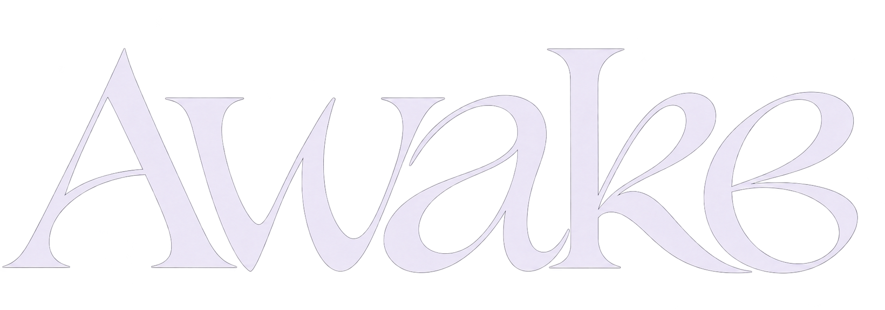
감각의 전환,
다시 깨어나는 인식.
LIMEN / A MOMENT AFTER THE FLOW
SCROLL TO RETRACE ↓RETRACE / 반딧불이부터 사람·타인까지
당신이 지나온 다섯 장면.
기억에 남은 장면을 선택하고,
그 순간의 감각을 다시 만나보세요.

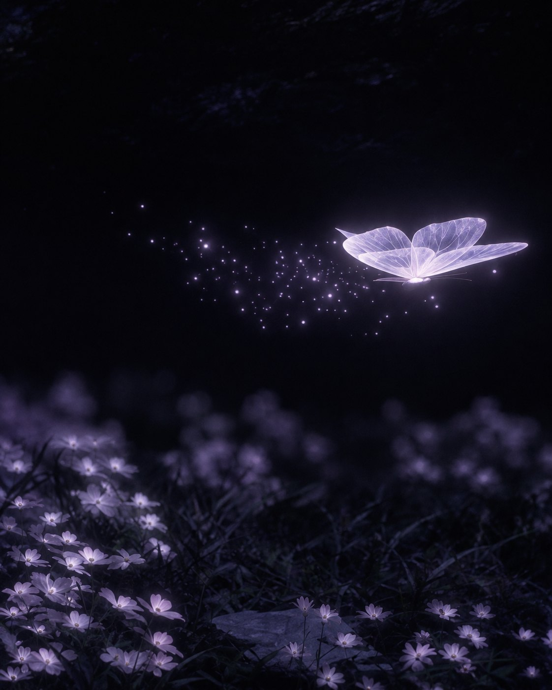

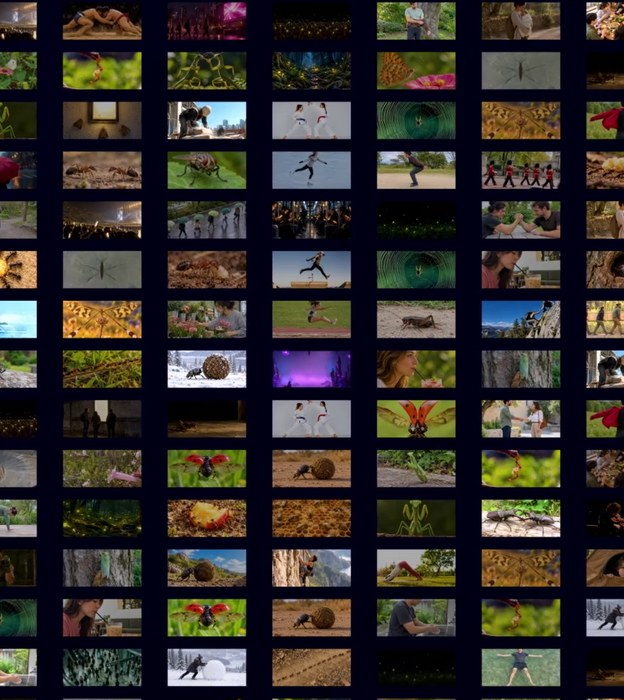
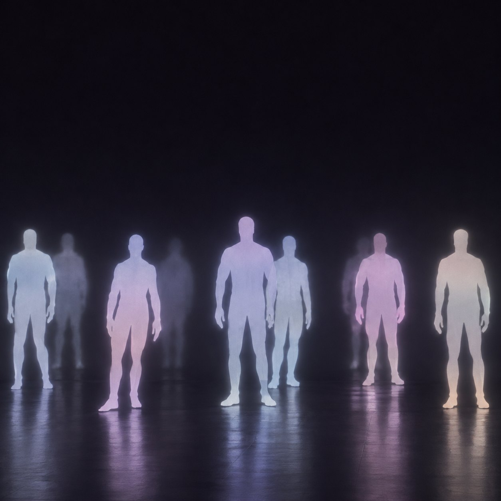
01 / FIREFLY
02 / MOTH
03 / SPIDER
04 / PASSAGE
05 / CROWD
작은 신호를 마주하다
이끌림의 방향을 따라가다
연결된 관계를 인식하다
곤충의 삶을 우리의 삶에 잇다
서로의 흐름을 마주하다
BEHIND THE SCENES / 장면에 담긴 의미
다섯 장면, 다섯 개의 질문.
FLOW → AWARENESS → CHOICE
경험을 지나, 의미를 발견하다.
FLOW
흐름을 마주하다
나를 둘러싼 신호와 움직임을 바라봅니다.
AWARENESS
영향을 알아차리다
선택에 스며든 외부의 영향을 인식합니다.
CHOICE
나의 선택을 바라보다
알아차림을 바탕으로 나만의 방향을 질문합니다.
01 / COLOR
빛의 온도와
어둠의 깊이.
차콜 위에 회보라의 층을 쌓고,
밝은 라벤더로 빛의 순간을 드러냅니다.
02 / TYPOGRAPHY
Inter
Noto Sans KR
Regular / Medium
내가 고른 방향은
정말 나만의 선택일까?
Aa
TITLE
64 px
HEADING
44 px
SUBHEADING
28 px
BODY
22 px
CAPTION
16 px

HALFTONE
BLUR
GRAIN
Symbol.

반딧불이
FIREFLY
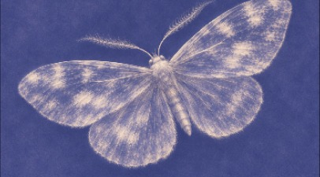
나방
MOTH
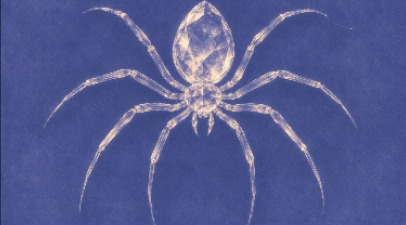
크리스탈 거미
CRYSTAL SPIDER

경계
THRESHOLD
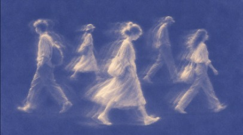
타인
OTHERS
LIMEN / POSTER ARCHIVE
A different way to see.


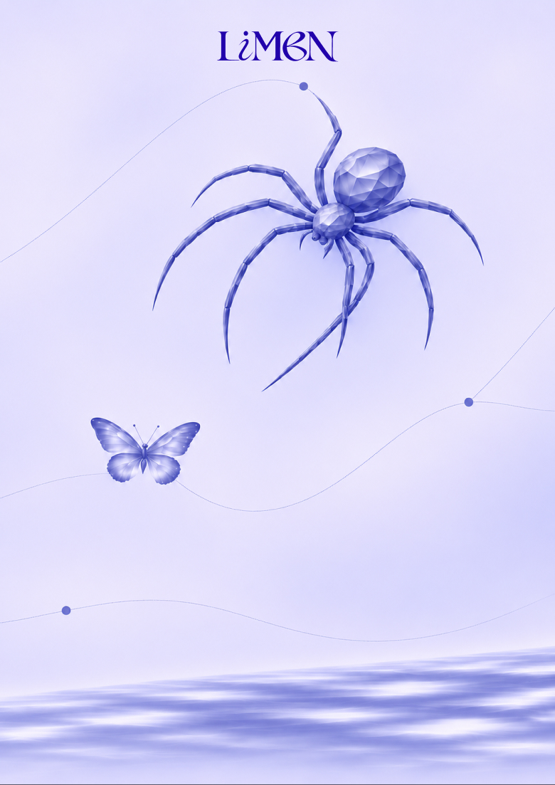
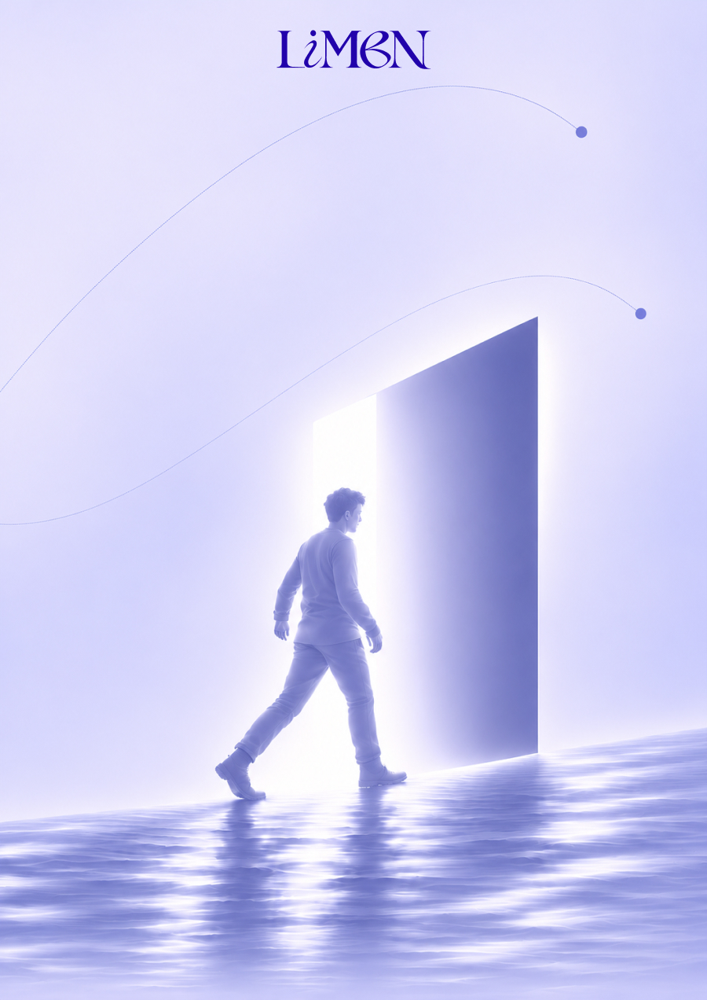
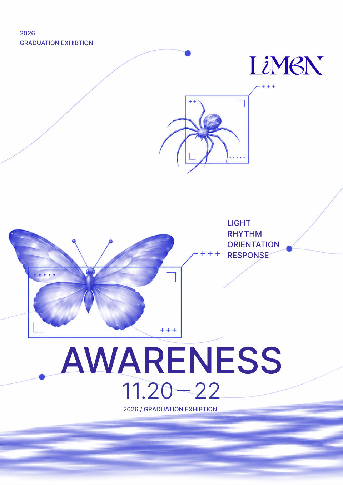
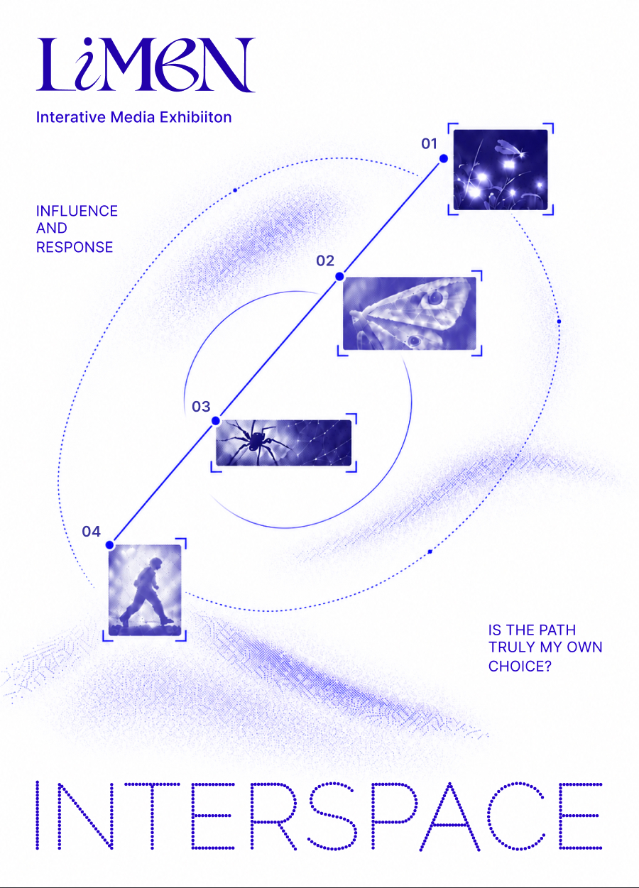
01 / MAIN POSTER
BETWEEN REALITY
AND DREAM
A QUESTION TO TAKE WITH YOU
지금, 나의 선택은
어디로 향하고 있나요?
전시에서 마주한 감각을 떠올리며,
일상으로 돌아갈 당신의 방향을 생각해보세요.
LEAVE A THOUGHT
당신의 생각을
이곳에 남겨주세요.
전시장 밖 포스터에 당신의 생각을 적어주세요.
다른 관람객의 생각도 함께 살펴볼 수 있습니다.